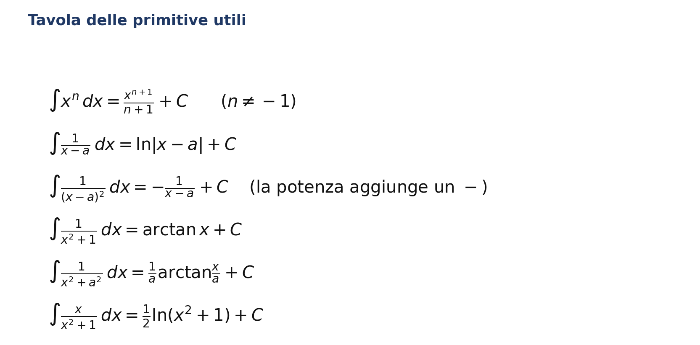
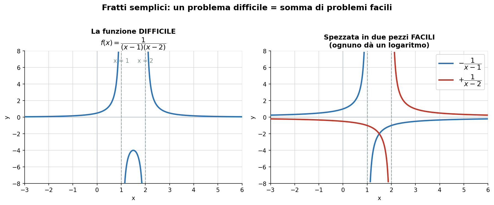
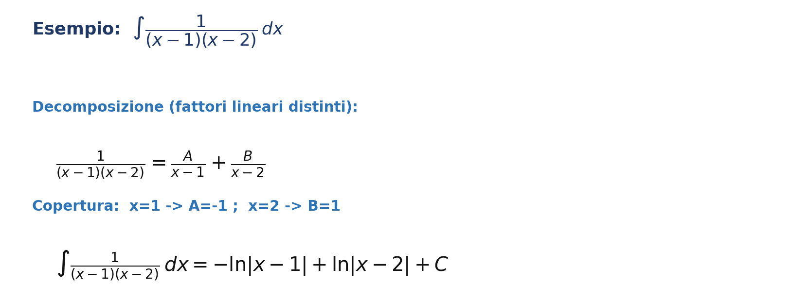
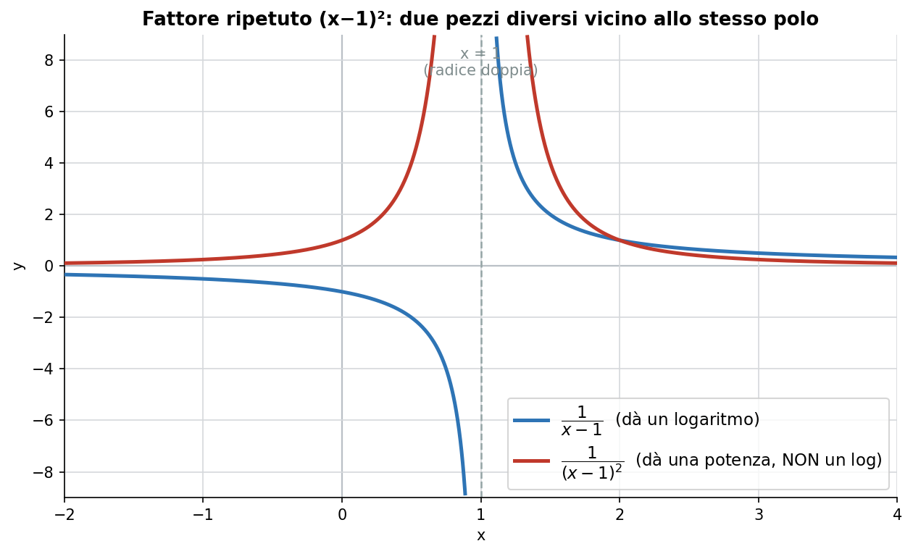
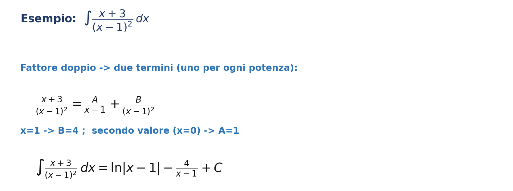
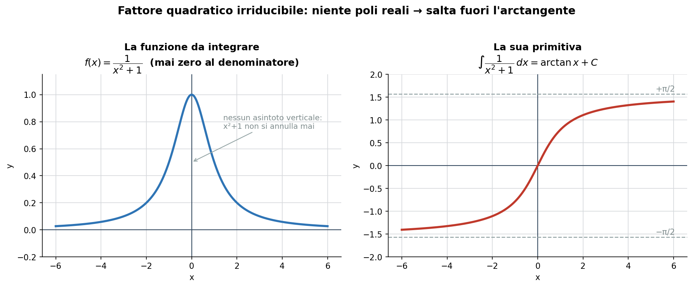
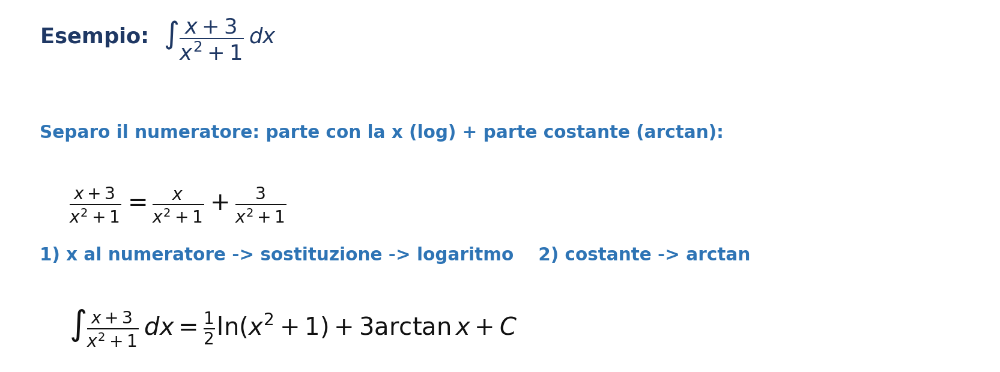
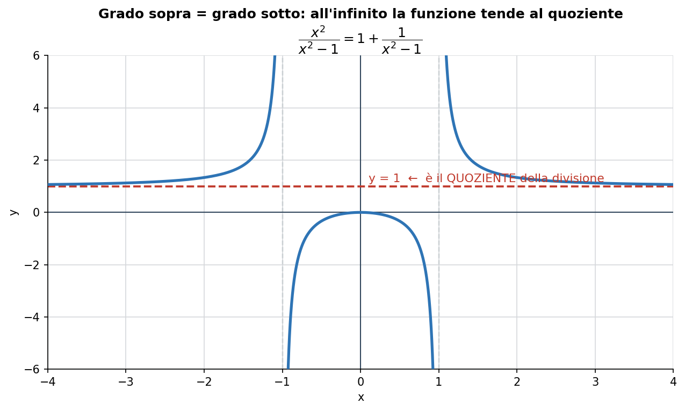
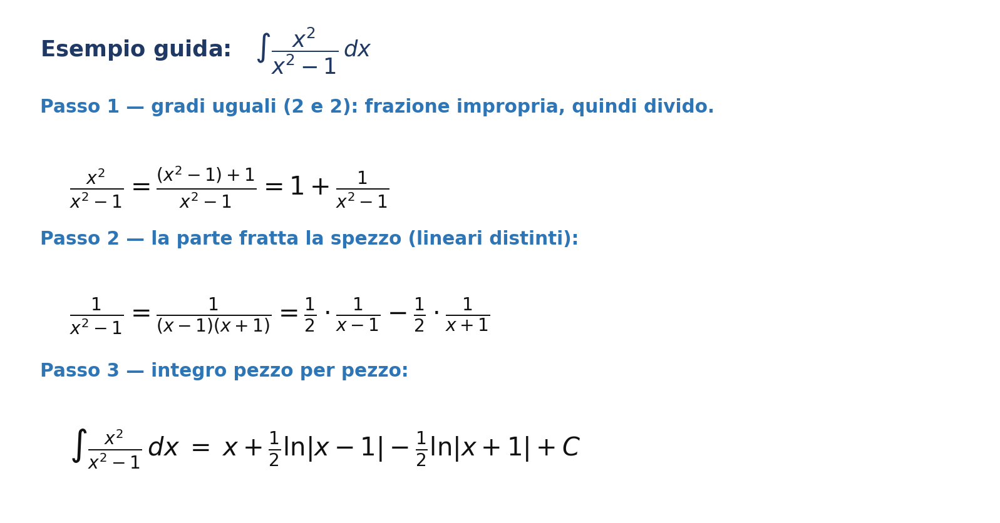

Metodo dei fratti semplici — Analisi Matematica I — Pierluigi Ceccon
Che cos'e e quando serve
Una funzione razionale e il rapporto di due polinomi, P(x)/Q(x). Quando l'integrale non compare nella tavola delle primitive, il metodo dei fratti semplici permette di spezzare la frazione difficile in una somma di frazioni facili, ognuna con primitiva nota: logaritmo, arctangente o potenza.
Prerequisito: il metodo si applica alle frazioni proprie, cioe quando il grado del numeratore e minore del grado del denominatore. Se non lo e, si esegue prima la divisione tra polinomi (vedi Caso 4).
Fonti: l'integrazione delle funzioni razionali e contenuto del testo Bertsch-Dal Passo-Giacomelli; non e trattata nella dispensa del docente "1) Integrale di Riemann.pdf".
Tavola delle primitive utili

Caso 1 - Fattori lineari distinti
Ricetta
Fattorizza il denominatore in fattori lineari tutti distinti.
Scrivi una frazione A/(x-a) per ogni fattore.
Moltiplica per il denominatore comune ed elimina le frazioni.
Trova le costanti con la copertura (metti x = radice di ciascun fattore).
Integra ogni pezzo come un logaritmo: l'integrale di A/(x-a) e A*ln|x-a|.
Somma tutto + C e verifica derivando.
Come appare (un problema difficile = somma di problemi facili)

Esempio svolto

Caso 2 - Fattori lineari ripetuti
Ricetta
A un fattore (x-a) elevato a k dedica k termini, uno per ogni potenza da 1 a k.
La copertura (x = a) ti da subito il coefficiente della potenza piu alta.
Gli altri coefficienti: sostituisci un secondo valore comodo (di solito x = 0).
Integra: solo la potenza 1 da il logaritmo; le potenze da 2 in su danno frazioni, con il loro segno meno.
Come appare (due comportamenti diversi vicino allo stesso polo)

Esempio svolto

Caso 3 - Fattore quadratico irriducibile
Ricetta
Controlla che il quadratico sia irriducibile: discriminante < 0, non si spezza in fattori reali.
Separa il numeratore nella parte con la x e nella parte costante.
La parte con la x: sostituzione u = denominatore, viene un logaritmo.
La parte costante: viene un'arctangente (con il fattore 1/a se il denominatore e x^2 + a^2).
Come appare (niente poli reali: salta fuori l'arctangente)

Esempio svolto

Caso 4 - Divisione preliminare
Ricetta
Se grado del numeratore >= grado del denominatore, PRIMA dividi.
Fai comparire il denominatore al numeratore (o esegui la divisione): ottieni quoziente + resto/denominatore.
Il quoziente e un polinomio: integralo direttamente. Attenzione: l'integrale di 1 e x, e un addendo da non dimenticare.
Il resto/denominatore e una frazione propria: applica il caso giusto dei fratti semplici.
Come appare (all'infinito la funzione tende al quoziente)

Esempio svolto

Le trappole da evitare
Doppia negazione: -(-cos x) = +cos x. Rallenta sempre sui segni.
Il meno della potenza: l'integrale di 1/(x-a)^2 e -1/(x-a). Integrare una potenza aggiunge un meno suo.
Non dimenticare il quoziente: dopo la divisione, in "1 + ..." quell'1 va integrato e diventa x (o t).
Denominatore x^2 + qualcosa: se al numeratore c'e la x -> logaritmo; se c'e una costante -> arctangente.
Isolare i coefficienti: da "1 = k*A" ricava A = 1/k dividendo per k, non A = k.
Verifica sempre: deriva il risultato di un integrale indefinito e controlla che torni la funzione di partenza.
Prossimo passo
Integrali impropri (sezione 1.6 della dispensa del docente): integrali con un estremo all'infinito oppure con la funzione che esplode a un estremo. Servono per l'Esercizio 4 del compito, dove compaiono gli impropri con il parametro alfa.